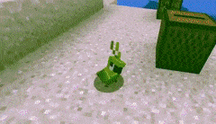

Korela chocholatá (Nymphicus hollandicus) je jediný zástupce australského rodu Nymphicus. Je to jeden z nejoblíbenějších papoušků v České republice. Je to druhý nejběžněji chovaný pták po andulce. Jedná se o poměrně nenáročného okrasného papouška, kterého lze chovat ve voliérách nebo i v domácích klecích. Slovo korela pochází z domorodých jazyků Austrálie, kde však označuje malé druhy kakaduů, především kakadua tenkozobého a naholícího.
..Tu sem 